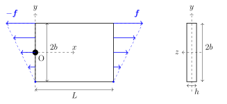
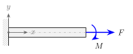
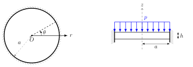
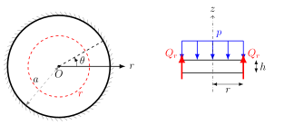
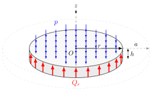
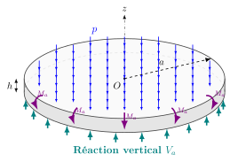
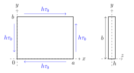
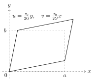

PC 1 · Solutions analytiques
Structures minces — plaques · ISAE-SUPAERO, 2e année
Chaque question a sa propre solution repliée : essayez d’abord, puis dépliez. Les encadrés Simulation permettent de vérifier les résultats en faisant varier les paramètres.
Exercice 1 — Traction-flexion d’une plaque mince dans son plan

Une plaque rectangulaire mince, d’épaisseur constante \(h\), est soumise au chargement auto-équilibré suivant :
- sur le bord \(x = L\) : une force linéique \[ \bm{f} = \begin{pmatrix} f_x \\ f_y \end{pmatrix} = \begin{pmatrix} Kh(y + b) \\ 0 \end{pmatrix}, \qquad K = \mathrm{const.} \]
- sur le bord \(x = 0\) : la force linéique opposée \(-\bm{f}\).
Afin de faciliter la comparaison entre les deux approches, on considère le point \(O\) de la plaque fixé en translation selon \(x\) et \(y\), et en rotation selon \(z\).
Approche plaque
- En proposant une expression des efforts internes de plaque (satisfaisant les équations d’équilibre de membrane), rappelez les hypothèses de membrane et vérifiez que cette plaque les satisfait.
- Exprimez les contraintes en tout point \(P(x, y)\), puis les déformations associées.
- Identifiez les champs de déplacement et de rotation \(u(x, y)\), \(v(x, y)\), \(\theta_z(x, y)\).
Approche poutre
- Proposez un modèle poutre de ce problème avec ses conditions aux limites cinématiques et statiques.
- Exprimez les efforts internes de poutre \(N(x)\), \(T_y(x)\), \(M_z(x)\) et la contrainte \(\sigma_{xx}\).
- Identifiez la déformée de la poutre (\(u(x)\), \(v(x)\), \(\theta_z(x)\)). Comparez avec l’approche plaque et expliquez l’origine des termes supplémentaires.
Équilibre statique en deux dimensions : \[ \div \bm{N}= \bm 0, \qquad \frac{\partial N_{xx}}{\partial x} + \frac{\partial N_{xy}}{\partial y} = 0, \qquad \frac{\partial N_{xy}}{\partial x} + \frac{\partial N_{yy}}{\partial y} = 0, \qquad \bm{N} = \int_{-h/2}^{h/2} \bm{\sigma}\, dz. \] Tenseur de déformation : \[ \bm{\varepsilon} = \tfrac{1}{2}\left(\nabla \bm{u} + (\nabla \bm{u})^\top \right), \qquad \varepsilon_{xx} = \frac{\partial u}{\partial x}, \quad \varepsilon_{yy} = \frac{\partial v}{\partial y}, \quad \varepsilon_{xy} = \frac{1}{2}\left(\frac{\partial u}{\partial y} + \frac{\partial v}{\partial x}\right). \] Loi de Hooke en contrainte plane : \[ \begin{pmatrix} \sigma_{xx} \\ \sigma_{yy} \\ \sigma_{xy} \end{pmatrix} = \frac{E}{1-\nu^2} \begin{bmatrix} 1 & \nu & 0 \\ \nu & 1 & 0 \\ 0 & 0 & \frac{1-\nu}{2} \end{bmatrix} \begin{pmatrix} \varepsilon_{xx} \\ \varepsilon_{yy} \\ 2\varepsilon_{xy} \end{pmatrix}. \] En 2D seule la composante \(\theta_z\) du vecteur rotation est utilisée : \[ \bm{\theta} = \tfrac{1}{2} \curl \bm{u}, \qquad \theta_z = \frac{1}{2}\left(\frac{\partial v}{\partial x} - \frac{\partial u}{\partial y}\right). \]
Les efforts de membrane à déterminer sont \(N_{xx}, N_{yy}, N_{xy}\). Au vu des conditions aux limites statiques et cinématiques, on propose \(N_{yy} = N_{xy} = 0\) et \[ N_{xx}(x, y) = Kh(y + b). \] Ces expressions satisfont les équations d’équilibre de plaque. La plaque est soumise à des efforts selon \(x\) et \(y\) qui ne varient pas selon \(z\) : elle se déforme uniquement dans son plan (membrane), pas en flexion.
La seule contrainte non nulle est la contrainte normale \[ \sigma_{xx} = \frac{N_{xx}}{h} = K(y + b). \] Les déformations découlent de la loi de Hooke : \[ \varepsilon_{xx} = \frac{\partial u}{\partial x} = \frac{K}{E}(y + b), \qquad \varepsilon_{yy} = \frac{\partial v}{\partial y} = -\nu \frac{K}{E}(y + b), \qquad 2\varepsilon_{xy} = \frac{\partial u}{\partial y} + \frac{\partial v}{\partial x} = 0. \]
En intégrant les déformations normales : \[ u(x, y) = \frac{K}{E}(y + b)x + f(y), \qquad v(x, y) = -\nu \frac{K}{E}\left(\frac{y^2}{2} + by\right) + g(x). \] La condition \(\varepsilon_{xy}=0\) donne \(\frac{Kx}{E} + f'(y) + g'(x) = 0\), soit \(\frac{Kx}{E} + g'(x) = -f'(y) = A\) (constante). Après intégration : \[ \begin{aligned} u(x, y) &= \frac{K}{E}(y + b)x - Ay + C_1, \\ v(x, y) &= -\nu \frac{K}{E}\left(\frac{y^2}{2} + by\right) + Ax - \frac{K}{E} \frac{x^2}{2} + C_2, \end{aligned} \] \[ \theta_z(x, y) = \frac{1}{2} \left( \frac{\partial v}{\partial x} - \frac{\partial u}{\partial y} \right) = A - \frac{K}{E}x. \] Avec \(u(0, 0) = v(0, 0) = \theta_z(0, 0) = 0\) on obtient \(A = C_1 = C_2 = 0\) : \[ \begin{aligned} u(x, y) &= \frac{K}{E}xy + \frac{Kb}{E}x, \\ v(x, y) &= -\frac{K}{E}\frac{x^2}{2} - \nu\frac{K}{E}\frac{y^2}{2} - \nu\frac{Kb}{E}y, \\ \theta_z(x, y) &= -\frac{K}{E}x. \end{aligned} \]
Si \(L \gg 2b\), la plaque peut être modélisée comme une poutre de longueur \(L\), de section \(S = 2bh\) et de moment quadratique \(I_z = \frac{h(2b)^3}{12} = \frac{2}{3}b^3h\). Le bord \(x = 0\) est encastré ; le bord \(x = L\) est soumis au torseur résultant de \(f_x\) :
- \(F = \int_{-b}^{b} f_x\, dy = KbS\) : effort de traction selon \(x\) ;
- \(M = \int_{-b}^{b} -y f_x\, dy = -K I_z\) : moment de flexion porté par \(z\).

Seuls l’effort normal et le moment de flexion sont non nuls : \(N(x) = F\), \(T_y(x) = 0\), \(M_z(x) = M\). La contrainte normale cumule les deux contributions : \[ \sigma_{xx}(x, y) = \frac{N}{S} - \frac{M_z}{I_{z}}\,y = K(b + y). \] On retrouve exactement la contrainte de l’approche plaque.
- Effort normal (allongement) : \(u(x, 0) = \int_0^x \varepsilon_{xx}\, dx = \dfrac{F}{ES}x\).
- Moment de flexion : \(v'' = \dfrac{M}{EI_z}\), d’où \(\theta_z = v' = \dfrac{M}{EI_z}x\) et \(v = \dfrac{M}{EI_z}\dfrac{x^2}{2}\).
La rotation de la section droite contribue au déplacement axial : \(u(x, y) = u(x,0) - \theta_z\, y\).
| Plaque | Poutre | |
|---|---|---|
| \(u(x, y)\) | \(\dfrac{Kb}{E}x + \dfrac{K}{E}xy\) | \(\dfrac{F}{ES}x - \dfrac{M}{EI_{z}}xy\) |
| \(v(x, y)\) | \(-\dfrac{K}{E}\dfrac{x^2}{2} - \nu\dfrac{K}{E}\dfrac{y^2}{2} - \nu\dfrac{Kb}{E}y\) | \(\dfrac{M}{EI_{z}}\dfrac{x^2}{2}\) |
| \(\theta_z(x, y)\) | \(-\dfrac{K}{E}x\) | \(\dfrac{M}{EI_{z}}x\) |
Avec \(F = KbS\) et \(M = -KI_z\), on retrouve terme à terme les contributions de l’effort normal et du moment. Les termes supplémentaires de \(v(x, y)\) dans l’approche plaque traduisent l’effet Poisson, négligé par le modèle poutre.
Exercice 2 — Disque soumis à un chargement constant
On considère une plaque circulaire encastrée sur son bord extérieur, soumise à une pression uniforme \(p\). Les conditions au bord et le chargement ne dépendent pas de \(\theta\) : le problème est axisymétrique.

- En utilisant l’équilibre statique d’un disque de rayon \(r\), retrouvez l’effort tranchant \(Q_r(r)\).
- Explicitez les conditions au bord du problème.
- Obtenez le déplacement vertical.
- Déduisez-en les réactions à l’encastrement.
- Comment changent les conditions aux limites pour un appui simple ?
Effort tranchant et chargement externe : \[\frac{1}{r}\frac{d}{dr}(rQ_r) + f_z = 0\] Effort tranchant et déplacement : \[ Q_r = -D \frac{d}{dr}\left[\frac{1}{r}\frac{d}{dr}\left(r\frac{dw}{dr}\right)\right] = -D\,\frac{d}{dr}\left(\Delta w\right), \qquad \Delta(\cdot)=\frac{1}{r}\frac{d}{dr}\left(r\frac{d(\cdot)}{dr}\right). \] Effort tranchant et moments : \(\;Q_r = \dfrac{1}{r} \left[\dfrac{d}{dr}(rM_{rr}) - M_{\theta\theta}\right]\)
Moments en fonction du déplacement : \[ M_{rr} = - D\left(\frac{d^2w}{dr^2} + \frac{\nu}{r}\frac{dw}{dr}\right), \qquad M_{\theta\theta} = - D\left(\frac{1}{r}\frac{dw}{dr} + \nu\frac{d^2w}{dr^2}\right). \]
On coupe le disque à une distance \(r\) du centre :

L’équilibre vertical de la partie centrale donne \[ 2\pi r\, Q_r = p\,\pi r^2 \quad\Longrightarrow\quad Q_r = \frac{pr}{2}. \]

La réaction verticale à l’encastrement correspond à \(r=a\) : \(V_a = \dfrac{pa}{2}\). Il restera à calculer la seconde réaction \(M_a\) (moment fléchissant au bord).

L’encastrement bloque le déplacement et la rotation ; avec l’hypothèse de Kirchhoff : \[ w(a)=0, \qquad \frac{dw}{dr}(a)=0. \]
À partir de \(Q_r = -D\,\frac{d}{dr}(\Delta w) = \frac{pr}{2}\), on intègre successivement : \[ \begin{aligned} 2D\,\frac{1}{r}\frac{d}{dr}\left(r\frac{dw}{dr}\right) &= -p\,\frac{r^2}{2}+A,\\ 2D\,r\frac{dw}{dr} &= -\frac{p}{8}\,r^4+\frac{A}{2}\,r^2+B,\\ 2Dw &= -\frac{p}{32}\,r^4+\frac{A}{4}\,r^2 + B\ln r+C . \end{aligned} \] Pour éviter \(w\to\infty\) en \(r=0\) (ou par symétrie, \(w'(0)=0\)), on impose \(B=0\). Les conditions au bord donnent ensuite \[ \frac{dw}{dr}(a)=0 \;\Rightarrow\; A = \frac{pa^2}{4}, \qquad w(a)=0 \;\Rightarrow\; C = -\frac{pa^4}{32}. \] D’où \[ w(r) = \frac{p}{2D}\left(-\frac{r^4}{32} + \frac{a^2r^2}{16} - \frac{a^4}{32}\right) = -\frac{p}{64D}\left(r^2-a^2\right)^2 . \]
Avec les lois moment–déplacement : \[ M_{rr}(r)=-\frac{p}{16}\left[a^2(1+\nu) - r^2(3+\nu)\right], \qquad M_{\theta\theta}(r)=-\frac{p}{16}\left[a^2(1+\nu) - r^2(1+3\nu)\right]. \] À l’encastrement : \[ M_{rr}(a)=\frac{pa^2}{8}, \qquad M_{\theta\theta}(a)=\nu\,\frac{pa^2}{8}, \qquad V_a = \frac{pa}{2}. \]
La rotation est libre et le moment fléchissant est nul : \[ w(a)=0, \qquad M_{rr}(a)=0. \]
Exercice 4 — Travail à la maison : cisaillement pur
On considère une plaque rectangulaire homogène, isotrope, élastique linéaire (module d’Young \(E\), module de cisaillement \(G\), coefficient de Poisson \(\nu\)), de dimensions \(a\) selon \(x\) et \(b\) selon \(y\). Elle est soumise à des forces linéiques tangentielles uniformes imposant un état de cisaillement pur : \[ \bm{f} = -h\tau_0\, \bm{e}_y \text{ sur } x=0, \qquad \bm{f} = +h\tau_0\, \bm{e}_y \text{ sur } x=a, \qquad \bm{f} = -h\tau_0\, \bm{e}_x \text{ sur } y=0, \qquad \bm{f} = +h\tau_0\, \bm{e}_x \text{ sur } y=b. \]

- Montrez que le champ de contraintes est un cisaillement pur uniforme.
- Déterminez les déformations.
- Trouvez un champ de déplacements. Quelles hypothèses faut-il introduire pour fixer le mouvement rigide ?
- Donnez les contraintes principales.
On cherche un champ statiquement admissible et uniforme : \(N_{xx} = 0\), \(N_{yy} = 0\), \(N_{xy} = h\tau_0\). Il vérifie trivialement \(\partial_x N_{xx} + \partial_y N_{xy} = 0\) et \(\partial_x N_{xy} + \partial_y N_{yy} = 0\). La seule composante active est \(\sigma_{xy} = \tau_0\).
Pour un matériau isotrope, \(\sigma_{xy} = G \gamma_{xy}\), donc \[ \gamma_{xy} = \frac{\tau_0}{G}, \qquad \varepsilon_{xx} = \varepsilon_{yy} = 0. \]
\(\varepsilon_{xx} = \partial_x u = 0 \Rightarrow u = f(y)\) et \(\varepsilon_{yy} = \partial_y v = 0 \Rightarrow v = g(x)\). Le cisaillement impose \(f'(y) + g'(x) = \tau_0/G\) : chaque terme est constant, \(f'(y) = A\), \(g'(x) = \tau_0/G - A\), d’où \[ u(x,y) = Ay + C_1, \qquad v(x,y) = \left(\frac{\tau_0}{G} - A\right)x + C_2 . \] Pour fixer le mouvement rigide, on bloque le point \((0, 0)\) en translation (\(C_1 = C_2 = 0\)) et en rotation : \(\theta_z = \frac{1}{2}\left(\partial_x v - \partial_y u\right) = \frac{1}{2}\left(\frac{\tau_0}{G}-2A\right) = 0 \Rightarrow A=\frac{\tau_0}{2G}\). Ainsi \[ u(x,y) = \frac{\tau_0}{2G}\,y, \qquad v(x,y) = \frac{\tau_0}{2G}\,x . \]

\[ \bm{\sigma} = \begin{pmatrix} 0 & \tau_0 \\ \tau_0 & 0 \end{pmatrix} \quad\Longrightarrow\quad \sigma_1 = \tau_0, \qquad \sigma_2 = -\tau_0, \] avec des directions principales inclinées à \(45^\circ\).